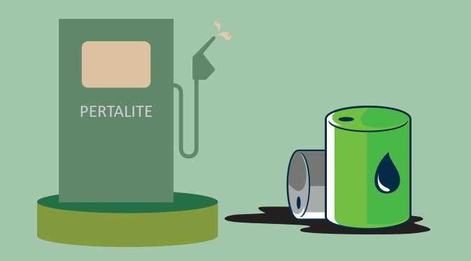

Tiga Faktor Dibalik Keunggulan Pertalite


Jakarta - Dalam acara Pertalite Beat OTOMOTIF Record yang diselenggarakan di SPBU Pertamina MT Haryono, Jaksel Sabtu lalu (19/11), terpapar data-data menarik mengenai keunggulan Pertalite yang diterangkan oleh Tri Yuswidjajanto Zaenuri dari LAPI ITB (Institut Teknologi Bandung). Sebelum mengulas keunggulan Pertalite, apa sih latar belakang Pertamina memasarkan bahan bakar ini? Menurut Danang Widya Surya, Ast. Manager Marketing Communication PT Pertamina (Persero), hal ini didasarkan pada kondisi pasar yang mayoritas didominasi kendaraan berasio kompresi 9-10:1. “Premium beroktan 88 cocoknya untuk mesin berkompresi di bawah 9:1, sedang Pertamax dengan oktan 92 untuk kompresi 10-11:1, sehingga untuk kendaraan dengan kompresi 9-10:1 belum ada, maka Pertamina meluncurkan Pertalite dengan oktan 90 untuk mengisi pasar itu,” terang Danang.
Performa dan Efisiensi TinggiMenurut Yus, sapaan Tri Yuswidjajanto, bahan bakar yang baik harus dapat memenuhi tiga faktor. Yang pertama adalah fuel economy yang baik dan kedua memenuhi kebutuhan performa. Sedang yang ketiga adalah durability, termasuk di dalamnya adalah kemampuan memenuhi kebutuhan standar emisi gas buang dan deposit sisa pembakaran.
Karena punya nilai oktan yang sedikit lebih tinggi, dalam tiga hal tersebut Pertalite lebih unggul dari Premium. Menurut Yus, oktan merupakan angka yang menunjukkan kemampuan bahan bakar untuk dikompresi atau ditekan.
“Semakin besar tekanan yang bisa diterima, tenaga yang dihasilkan juga semakin besar,” imbuhnya. Jadi bila jenis bensin yang dipakai punya oktan yang sesuai dengan rasio kompresinya, maka pembakaran yang terjadi bisa sempurna dan menghasilkan tenaga maksimal.

Efek berantainya konsumsi bensin bisa lebih irit, karena dengan bukaan gas yang sama, tenaga yang dirasakan lebih besar. Tak perlu betot gas dalamdalam sudah melaju kencang. Pantas Pertalite punya tagline “Melaju Lebih Jauh”. Terbukti dari hasil pengujian OTOMOTIF maupun yang dilakukan oleh Yus di laboratorium, konsumsi bensin pakai Pertalite cenderung lebih irit dibanding Premium. Sebagai contoh pada Honda Supra X125 FI, pakai Premium hanya 65,1 km/liter, sedang Pertalite 71,9 km/liter.
Tentu dengan catatan dilakukan secara eco riding alias berkendara mengejar irit. Sedang hasil yang dilakukan tim LAPI ITB di laboratorium, sebuah Honda BeAT FI dapat menempuh 68,2 km/liter dengan Premium, ketika diisi Pertalite, konsumsi bensinnya melonjak jadi 78,2 km/liter. Biaya operasionalnya juga lebih hemat. “Meskipun harga Pertalite sedikit lebih mahal dibanding Premium tapi biaya Rupiah / km-nya jadi lebih kecil,” jelasnya. Bahkan tenaga yang dihasilkan saat dites di atas dynamometer pun terbukti lebih besar pakai Pertalite. Sebagai contoh menurut Yus di Honda BeAT FI, pakai Premium hanya 7 dk, sedang diisi Pertalite naik jadi 7,8 dk. Lalu, jika mesin berasio kompresi 9-10:1 dipaksa minum Premium, maka dikhawatirkan timbul ngelitik atau detonasi. “Itu karena bahan bakar terbakar dengan sendirinya karena tak kuat tekanan, kemudian berikutnya baru ada nyala api busi. Nah tumbukan gelombang pembakaran dari keduanya ini yang menimbulkan bunyi ngelitik,” lanjut Yus.
Komentar